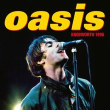

The Knebworth concerts in 1996 stand as pivotal events in Oasis's career and the broader context of British rock music. Held at the historic Knebworth House in Hertfordshire, England, on August 10th and 11th, these concerts are etched in history for their scale, cultural impact, and the sheer magnitude of the audience.
Oasis played to an unprecedented crowd of 250,000 fans over the two nights, making it one of the largest audiences ever assembled for a concert in the UK at that time. The demand for tickets far exceeded availability, with millions applying, highlighting the band's immense popularity.
The significance of the Knebworth concerts extends beyond numbers. They symbolize the zenith of the Britpop movement, with Oasis leading the charge. The concerts showcased the band's dynamic stage presence and their ability to connect with a massive audience, solidifying their status as one of the defining acts of the 1990s.
The setlist featured a compelling mix of tracks from their first two albums, "Definitely Maybe" and "(What's the Story) Morning Glory?" Oasis's electrifying performances and the enthusiastic response from the crowd made Knebworth a cultural phenomenon.
The cultural impact of the Knebworth concerts is further emphasized by their inclusion in the documentary "Oasis: Live at Knebworth 1996." This film immortalizes the historic performances and captures the fervor and excitement of the fans, illustrating the lasting legacy of these concerts in the annals of British music history.

Oasis Knebworth Concert
 ?
?